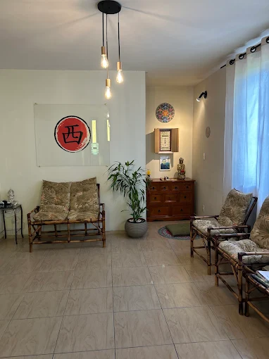
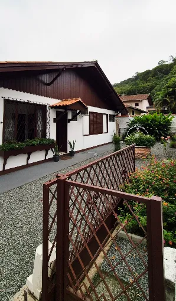
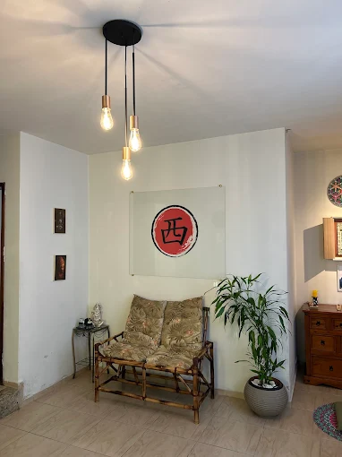

.png)
Quiropraxia
Alinha a coluna, melhora a mobilidade e alivia tensões musculares.
Carregando experiência Nishi
Nishi Medicina Oriental
Uma abordagem integrativa da medicina oriental para cuidar de você de forma individualizada, com atenção, equilíbrio e propósito.
Nossos Tratamentos
Unimos ciência, técnica e cuidado para aliviar dores, melhorar sua mobilidade e promover mais qualidade de vida.
Alinha a coluna, melhora a mobilidade e alivia tensões musculares.
Equilibra o organismo, reduz o estresse e estimula o bem-estar.
Conheça todos os tratamentos e descubra o que é ideal para você.
Conheça as terapiasSobre a Clínica
Na Nishi Medicina Oriental, unimos tradição e ciência para oferecer um cuidado integral à sua saúde. Nossa clínica foi projetada para proporcionar bem-estar, conforto e um ambiente acolhedor, onde você se sente seguro em todas as etapas do seu tratamento.
Espaço tranquilo e confortável para o seu bem-estar.
Profissionais experientes e comprometidos com a sua saúde.
Tratamentos que equilibram corpo e mente.
Em um ponto acessível, com toda a estrutura que você precisa.



Nosso Time
Nossa equipe é formada por profissionais qualificados e apaixonados pelo que fazem. Juntos, unimos conhecimento, experiência e um olhar humano para cuidar da sua saúde de forma integral.
Médico Oriental
Especialista em Acupuntura, com foco em equilíbrio energético e bem-estar integral.
Médica Oriental
Especialista em Fitoterapia e Medicina Tradicional Chinesa, com foco em saúde feminina e longevidade.
Médica Oriental
Especialista em Auriculoterapia e Terapias Integrativas, com foco em controle da dor e qualidade de vida.
★★★★★
“ espaço Nishi é um lugar incrível. A energia do ambiente suave e acolhedora proporciona relaxamento e reconexão. Cada detalhe transmite cuidado, presença e intenção.E a Berna… é um ser de luz. Sua escuta, sensibilidade e entrega tornam cada experiência única e transformadora.Estar ali é se permitir pausar, respirar e receber exatamente o que a alma precisa.”
★★★★★
“Recomendo muito, excelente atendimento, é tão bom que fechei um pacote anual. Nossa vida é tão corrida que precisamos parar e cuidar da mente e corpo. Parabéns Andresa e Manoel.”
★★★★★
“Ambiente agradável, profissionais muito atenciosos desde o primeiro contato pelo Whats. Estava fazendo um tratamento de 6 meses com Neurologista para enxaqueca crônica e as dores continuavam. Em uma consulta de Acumpuntura com o Dr. Emmanuel fiquei 1 semana sem dor nenhuma, tirou minhas dores com a mão... Maravilhoso. Alémda quiropraxia que é maravilhosa. Parabéns recomendo”
Entre em Contato
Estamos prontos para te atender e cuidar da sua saúde com atenção, respeito e acolhimento.